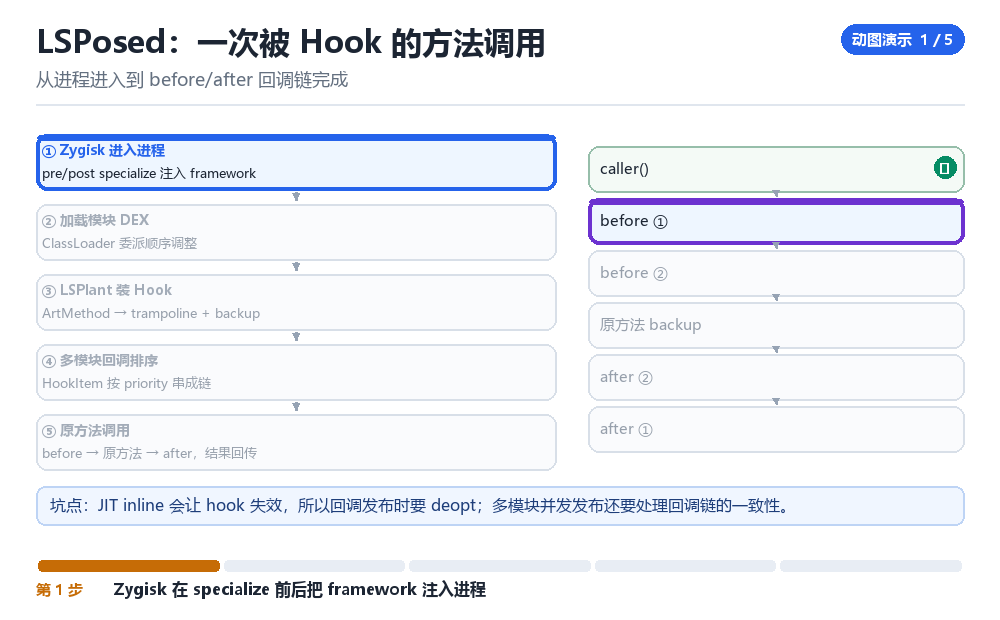

LSPosed 总体设计与进程进入
Zygisk pre/post specialize、进程筛选、framework DEX、Binder、Main.forkCommon
先解决“进不进得来”，再解决“进来之后干什么”。
1.1 五个阶段

- Zygisk 注入 zygote：与第 08 章同一套机制。
- pre-specialize：读模块配置，决定哪些包需要注入。
- fork 出 App：子进程带着已加载的 framework dex。
- post-specialize：按包名 / UID 做二次筛选。
- Main.forkCommon：初始化 Hook 框架，加载模块。
1.2 为什么要分两个时机
| 时机 | 优势 | 限制 |
|---|---|---|
| pre-specialize | 还能读 /data/adb 下的模块目录与配置 | 还不知道自己的包名 |
| post-specialize | 已知道包名与 UID，可精确筛选 | 读不到模块目录 |
所以典型做法是：pre 阶段把需要的东西（dex、配置）先读进内存，post 阶段再根据“我是谁”决定用不用。
1.3 检测视角
pre 阶段会打开模块目录，而一个沙箱内的 App 却“曾经”访问过 /data/adb——这是很强的信号。同理，framework dex 的内存映射、以及 fork 之后多出来的 dexElements，也都是线索。
1.4 本章自测
- pre 与 post 两个时机各能做什么、不能做什么？
- 为什么要把 dex 在 pre 阶段就读进内存？
- pre 阶段访问 /data/adb 会留下什么信号？
- 如果目标进程没有 forkCommon（比如纯 native 进程），会发生什么？
1.5 深入：framework dex 为什么要预加载
如果每个 App 进程在运行时才去读 dex 文件，会有两个问题：一是慢，二是“读文件”这个动作本身可见。预加载到 zygote 后，子进程通过 fork 直接继承内存映射，既不慢也不产生新的文件访问。
| 方式 | 启动开销 | 文件访问痕迹 |
|---|---|---|
| 运行时读取 | 高 | 明显 |
| zygote 预加载 | 低 | 仅一次 |
1.6 实战：判断某个进程是否被注入
# 1. maps 里有没有 framework dex 的匿名映射
grep -c 'anon' /proc/<pid>/maps
# 2. ClassLoader 数量是否异常
# 3. dexElements 里是否有私有目录路径1.7 原理推演：为什么要在“两个时机”分别做事
因为“能读到什么”与“知道我是谁”这两件事，在时间上是错开的：fork 之后、specialize 之前，能读模块目录但不知道自己是谁；specialize 之后，知道自己是谁但读不到模块目录。
| 信息 | pre | post |
|---|---|---|
| 模块目录 | 可读 | 不可读 |
| 包名 / UID | 未知 | 已知 |
| SELinux 域 | zygote 域 | untrusted_app 域 |
所以正确的架构是“pre 读、post 用”——把需要的东西提前读进内存，等知道身份后再决定用不用。
1.8 数据细节：forkCommon 做了什么
1. 初始化 Hook 框架（LSPlant）
2. 创建模块的 ClassLoader
3. 加载各模块的入口类
4. 按配置调用模块的 init
5. 注册后续的 hook如果第 3 步失败（模块 dex 加载不了），表现是“框架起来了但模块没生效”。排查时先看这一步的日志。
1.9 深入：进程筛选的三种粒度
| 粒度 | 依据 | 优缺点 |
|---|---|---|
| 全量 | 所有 App | 简单，但开销大、暴露面广 |
| 按包名 | 配置白名单 | 精确，但配置要维护 |
| 按 UID | 运行时判断 | 能覆盖多进程 App |
实践中常用“包名 + UID”组合：包名决定“要不要进”，UID 决定“进来后怎么处理多进程”。
1.10 深入：framework dex 的加载时机
它必须在“App 的 ClassLoader 创建之前”就准备好，否则插不进 dexElements。这也是为什么它要在 pre-specialize 阶段读进内存——那时还没有 App 的 ClassLoader。
pre-specialize: 读 framework dex 到内存
fork -> specialize: App 的 ClassLoader 创建
post-specialize: 把 dex 插进 dexElements1.11 实战：确认 forkCommon 是否被调用
1. 日志里有框架初始化输出
2. ClassLoader 数量比基线多
3. dexElements 里有额外条目进程睁眼前的那一秒
一个 App 刚被 zygote fork 出来，还没来得及执行第一行 Application.onCreate。此刻它继承了父进程整张页表、几十个已经打开的 fd、以及 zygote 里所有已加载的 DEX。LSPosed 必须在这个进程睁眼之前做完三件事：把 framework dex 摆到能被调用的位置、按包名决定要不要继续、把模块列表变成进程内的回调。晚一步，App 的 PathClassLoader 就已经建好，想再往 dexElements 里塞东西就得动隐藏 API；早一步，你还不知道自己是 com.example.app 还是 com.android.systemui。
把这一秒放大看，它其实是一条权限递减的通道：preAppSpecialize 时进程还顶着 zygote 的 SELinux 域，能读 /data/adb/lspd 下的模块配置，但 nice_name 与最终包名还没落定；specialize 一过，UID、补集 GID、seinfo、untrusted_app 域一次性贴上，/data/adb 立刻变成 EACCES。所以框架不是'可选地分两段'，而是'只有这两段各自能拿到对方拿不到的东西'——配置必须过河，权限必须留下。
从进程进入到 before/after 回调链完成

两道门之间，谁搬了什么
- Zygisk 加载器 → zygote 进程：Magisk / KernelSU 的 Zygisk 在 zygote 启动时
dlopen模块 so，注册preAppSpecialize与postAppSpecialize两个回调；结果是此后每个即将诞生的 App 都会先穿过这一段 native 代码，没有例外。 - preAppSpecialize → 模块配置与 framework dex：框架在这道门里读 scope 配置、把
framework.dex的字节缓存进堆；结果是子进程不需要再碰/data/adb，配置已经以内存形态躺在被继承的页表里。 - companion 进程 → 特权读写：枚举模块 APK、读 sqlite 配置这类需要高权限的活，通过
connectCompanion()转交给一个独立进程；结果是 zygote 里不会长时间挂着一个指向模块目录的 fd。 - fork + specialize → 子进程：内核复制页表（COW），Android 侧补上 UID/GID、进程名与 SELinux context；结果是同一份 framework dex 被父子共享，但权限已经塌到
untrusted_app。 - postAppSpecialize → 二次筛选：框架用此时才准确的包名与 UID 查 scope 表，不在作用域内就直接返回并释放缓存；结果是白名单外的进程几乎零残留，连初始化日志都不打。
- Main.forkCommon → 进程内框架：命中作用域才初始化
LSPosedBridge、装配 LSPlant、构造模块 ClassLoader、把handleLoadPackage派发给各模块；结果是 App 的onCreate执行时，回调链已经挂好，业务代码一无所知。
最容易被读漏的是第五拍：筛掉也是一种动作。很多'进不进得来'的排查，最后发现问题不在注入，而在 scope 没勾上目标包，框架在 post 阶段自己退了出去。日志一片安静，不代表机制失效，只代表筛选器按预期工作。
framework.dex 必须在 pre 阶段读进内存，还有一个更硬的理由：它要在 App 的 PathClassLoader 构造之前就变成可用的 DexFile，否则只能事后去改 DexPathList.dexElements——那是隐藏 API，Android 14 之后还要再过一层 VMRuntime 的校验。fork 时继承一份已加载的 dex，比在子进程里补插一段数组干净得多，也不会在 dexElements 上留下突兀的追加痕迹。
把进没进来变成日志里的一行
# 1. 拿 PID：输出一个数字算成功，空输出说明进程根本没起来
adb shell pidof com.example.app
# 2. 看它继承了哪些 fd；pre 阶段漏关的 /data/adb 会在这里露出来
adb shell ls -l /proc/[PID]/fd | grep -i adb
# 3. 看 maps：框架 dex、匿名可执行段、lspd 的 so
adb shell cat /proc/[PID]/maps | grep -E 'lspd|dex|memfd|anon:dalvik'
# 4. 抓初始化日志，forkCommon 后面应当跟着模块名
adb logcat -s LSPosedBridge:V LSPosed:I | grep -E 'forkCommon|loaded module|scope'
# 5. 对照：未启用框架的同一台机器上重跑 2、3，作为干净基线看到什么算成功：pidof 有 PID，logcat 里出现 forkCommon 且后面跟着模块名，而 /proc/[PID]/fd 里 grep 不到 adb。看到什么算失败：只有 pidof 有输出、其余三项全空——那是框架没进这个进程，先去查 Zygisk 是否对该进程启用、scope 是否勾了目标包；反过来，如果 fd 里 grep 到了 /data/adb 而模块确实生效，说明 pre 阶段打开的目录 fd 没关干净，这正是检测方最爱抓的一处。第 5 步的对照不能省，否则你无法区分'多出来的 dex'是框架的还是 App 自带的热修复。
- pre 残留是文件与映射：未关的目录 fd、随 fork 继承的 framework dex，最容易被
/proc看到。 - fork 残留是共享页：COW 计数与页表项，不产生新对象，却让内存对比带着 zygote 旧账。
- post 残留是对象与引用：Binder 代理、额外 ClassLoader、回调链，改名字抹不掉。
- 规律：越往后，残留越从'看得见的文件'变成'数得清的结构'——L09 差分检测由此成立。
| 时机 | SELinux 域 | 此刻能拿到 | 此刻拿不到 | 典型残留 |
|---|---|---|---|---|
| pre-specialize | zygote | 模块目录、APK、framework dex | 精确包名、App data 目录 | 未关的目录 fd、多出的 dex 映射 |
| fork 瞬间 | 继承父进程 | 父进程全部页表与 fd | 自己的最终身份 | 共享页的 COW 计数 |
| post-specialize | untrusted_app | 包名、UID、cmdline | /data/adb、提权能力 | Binder 代理、额外 ClassLoader |
| forkCommon 后 | untrusted_app | 已挂好的回调链 | 任何超出应用域的文件 | dexElements 条目、线程 |
横向读最后一列会发现一件事：越往后，残留越是'结构性'的——前两行是文件和映射，后两行是对象和引用。这正好预告了 L09 的结论：改名字能抹掉前两行，抹不掉后两行。
把这条'权限递减的通道'记住，第三部 F01 讲 Frida 的 Zygote 门控时你会看到同一张图：注入点同样卡在 specialize 前后，只是 Frida 要的是 ptrace 与 agent 线程，LSPosed 要的是 dex 与回调链；第二部 K01 里 fork 继承 fd 表与 cred 的那几页，正好解释了这里 /proc/[PID]/fd 为什么会露出 zygote 的旧账。训练营 T01 让学员自己造一道检测，第一道往往就架在这个 fd 上。